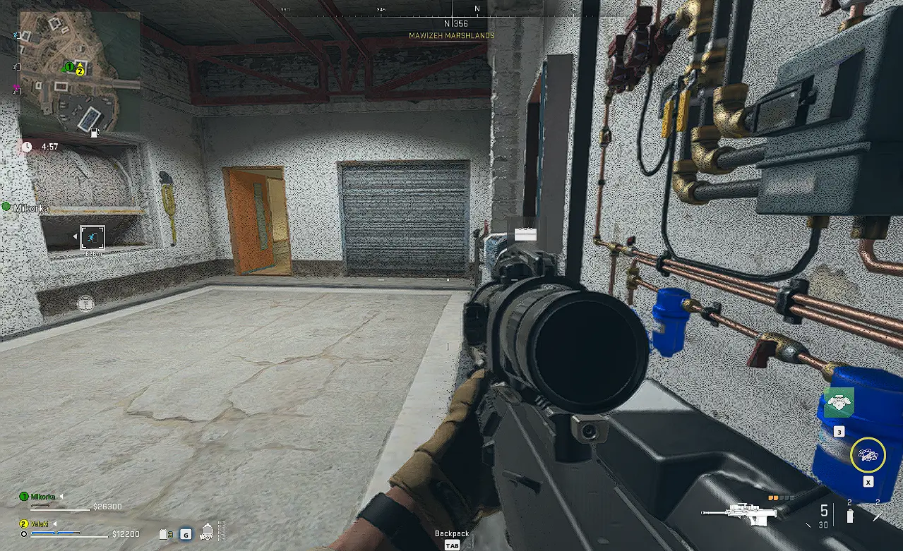

Képek

Rólam
A nevem Scheller Soma. A Hatvani Széchenyi István Római Katolikus technikum és gimnázium tanulója vagyok. Hobbim a sport, és a számítógépes játékok.

programozó - rendszergazda - tanuló
A nevem Scheller Soma. A Hatvani Széchenyi István Római Katolikus technikum és gimnázium tanulója vagyok. Hobbim a sport, és a számítógépes játékok.